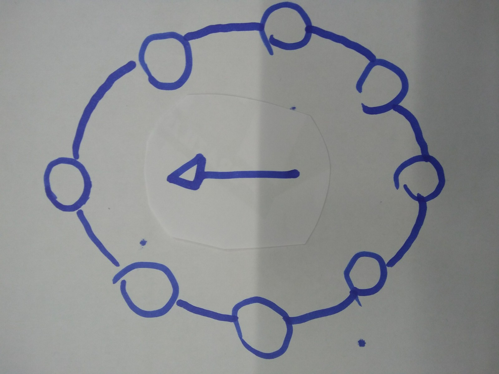
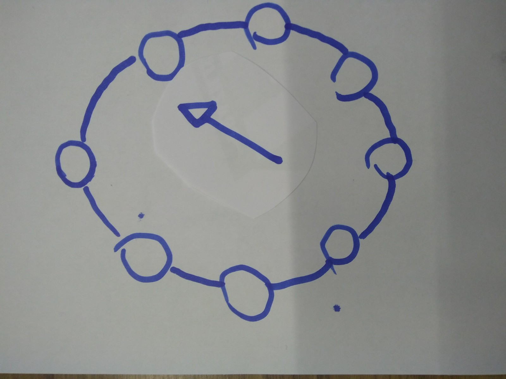
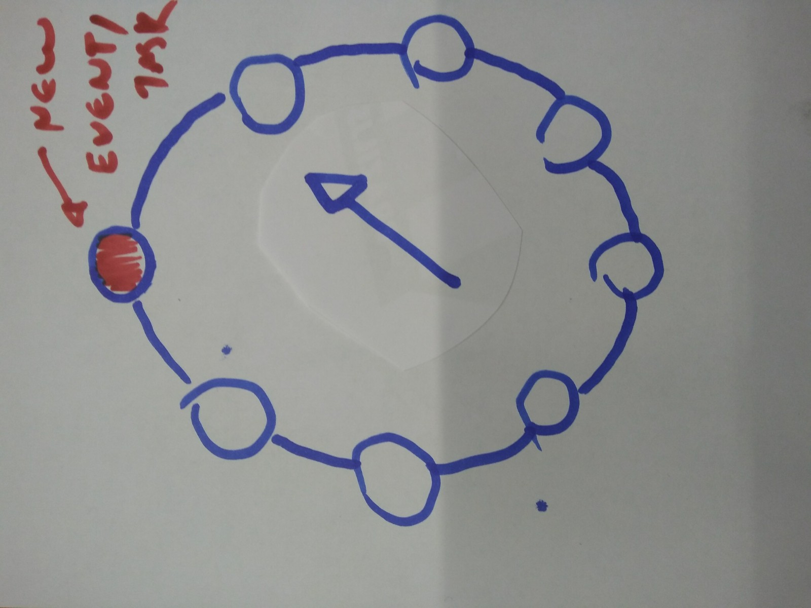
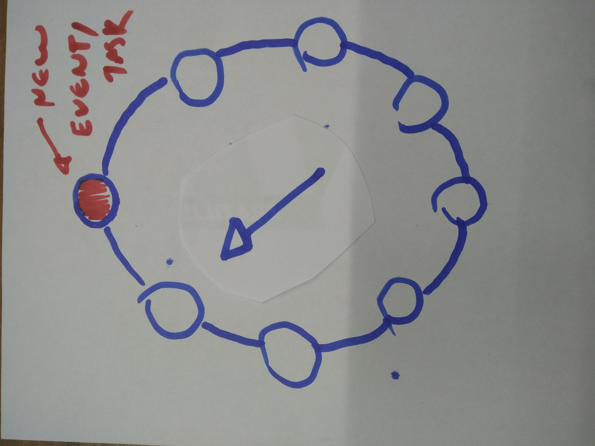
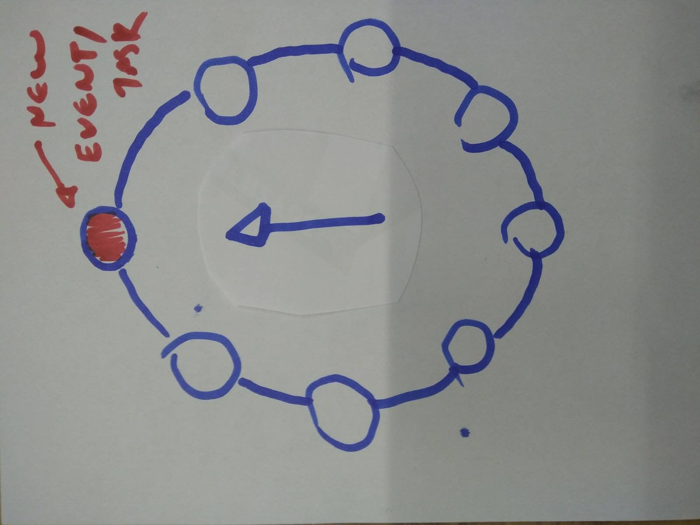
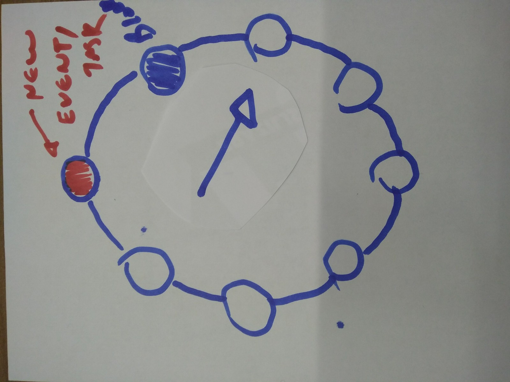

async/io
alan.ficagna@deepx.it
1 Why
- Humans are the bottleneck of development.
- Current solutions for the human problem are not very good.
2 State of the art
2.1 Callbacks

Hard to read
2.2 Threading

2.2.1 Threads are hard because:
- Human beings have a really short, short-term memory.
- Easy to introduce bugs (the nasty ones).
- Debugging is nearly impossible.
- They are also not that useful in python because of GIL.
3 Interlude: ASYNC vs PARALLEL
Async simply means it executes in an order different than the order that it was written in.
Parallel implies more than one execution unit and simultaneous execution.
4 Solution? asyncio!
Writing synchronous looking code that executes asynchronously!
* assuming python 3.6
4.1 Coroutines
Voluntary yielding of execution to other code.
async def do_something_heavy(): for i in range(1000000): await mine_some_bitcoin()
4.2 Event Loops

4.3 A

4.4 B

4.5 C

4.6 D

4.7 E

4.8 Task and Futures
Promisselike objects.Futures<Tasks(Taskis a subclass ofFuture)- You create them by calling
loop.ensure_future
5 How
5.1 Making a simple producer/consumer
import asyncio import handlers # Ficticious module async def consumer(queue): while True: item = await queue.get() await handlers.consume(item) #! Must be async async def producer(queue): while True: item = await handlers.produce() #! Must be async await queue.put(item)
queue = asyncio.Queue() # Schedule loop.ensure_future(consumer(queue)) loop.ensure_future(producer(queue)) # Starts the loop loop = asyncio.get_event_loop() loop.run_forever()
6 Practical advices
6.1 Mixing async and sync code
6.1.1 Function Coloring
http://journal.stuffwithstuff.com/2015/02/01/what-color-is-your-function/
6.1.2 Using executors
import asyncio import time def n_sync(n): print("I don't care/Who you are/Where you're from/And what you did" "/As long as you love me, baby") time.sleep(n) loop = asyncio.get_event_loop() loop.run_in_executor(None, n_sync, 5)
6.1.3 Using queues
Janus, the god that has two faces
import janus import asyncio q = janus.Queue(loop=asyncio.get_event_loop()) q.async_q q.sync_q
https://github.com/aio-libs/janus
6.2 Overcoming the confusing API
- The IO in the asyncio
- Tasks/Coroutines/Futures/Awaitables/Protocols/Transports phew..
- What does it all mean for libraries like tornado and twister.
7 Questions/Feedback?